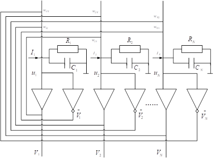
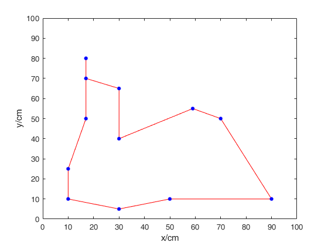

最近一门人工神经网络的课程结课，利用Matlab做了一个小Project，在此分享。
问题描述
旅行商问题（Travelling salesman problem, TSP）：给定一系列城市和每对城市之间的距离，求解访问每一座城市一次并回到起始城市的最短回路。它是组合优化中的一个NP困难问题，很难通过枚举法求解，特别是在N较大的时候。但是通过神经网络或者其他启发式算法可以较好地解决该问题。
Hopfield网络
简介
Hopfield神经网络是一种递归神经网络，由约翰·霍普菲尔德等人在1982年发明。Hopfield网络是一种结合存储系统和二元系统的神经网络，有连续型与离散型之分。TSP问题可用连续型Hopfield网络（Continuous Hopfield Neural Network, CHNN）解决，故本文主要介绍CHNN网络。
CHNN可由一些简单的电子线路连接起来实现（Fun Fact：发明CHNN网络的人是搞物理的，网络实验也是在物理元件电路上进行的），如图所示，每个神经元均具有连续时间变化的输出值，并采用具有饱和非线性的运算放大器来模拟神经元的S型单调输入——输出关系。

对节点数量为N的CHNN网络，其神经元状态变量的动态变化可用下述非线性微分方程组来描述
其中，$f(x)$为激励函数，$f(x)=\frac{1}{2}[1+tanh(\frac{x}{x_0})]$。
定义能量函数
CHNN能量函数的表达形式与物理意义的能量函数一致，用于表征网络状态的变化趋势。
两个结论
并有如下结论（详细推导过程不赘述）
- 结论1：$\frac{\partial E}{\partial v_i}=-C_i\frac{\partial u_i}{\partial t}$
- 结论2：若函数$f(v)$是单调递增且连续的，并有$Ci>0，T{ij}=T_{ji}$，则随着网络状态的变化，有$\frac{\partial E}{\partial t}≤0$，当且仅当$\frac{\partial v_i}{\partial t}=0$时，$\frac{\partial E}{\partial t}=0$。
利用CHNN求解TSP问题
置换矩阵
由于问题中要求每个城市要求均需访问一次且不重复，故采用置换矩阵表示路径顺序。
- 置换矩阵
矩阵的每一行表示一个城市，每一列表示访问的顺序，用元素“1”表示访问，元素“0”表示没有访问。
求解思路
基于以上结论，若将最优化问题的目标函数转换成网络的能量函数，把问题变量对应于网络状态，则可将CHNN网络用于解决优化组合问题。
在实际求解时，可根据状态方程反推出网络的结构，即$T_{ij}$、$I_i$等参数，然后在确定的网络下进行迭代求解。但当问题较为复杂时，往往比较难通过状态方程反推出网络结构，这时可利用上述重要结论，首先为网络输出赋初值，然后在每次迭代时求出状态方程的增量进行叠加，使网络的输出逐渐收敛。
能量函数
TSP问题所用的能量函数可包含约束项和优化项。
- 约束项
约束项主要保证每个城市均被访问且只能被访问1次，即输出矩阵为置换矩阵。可用数学形式表示如下 - 优化项
优化项使得总路程往最小化的方向变化。可表示如下 - 总能量函数
总的能量函数为
动态方程
根据结论1，可得到以下动态方程，该方程用于每次迭代时更新状态变量。
算法实现
算法流程
- 状态变量初始化
首先，按照下式为各状态变量赋随机初值其中，$\Delta u_{xi}$取区间$(-1,+1)$内的随机值。 - 计算神经元输出
根据激励函数计算神经元的输出 - 计算状态变量增量
得到神经元的输出后，可继续计算状态变量的增量 - 计算新的状态变量
将状态变量与上一时刻的状态变量叠加得到新的状态变量。 - 计算能量
根据新的状态变量和神经元输出，代入网络能量表达式计算得到本次迭代后的能量。 - 判断是否满足终止条件
当能量值不再变化或者迭代次数达到最大值时，则满足迭代收敛条件。但在实际操作中，能量值很难满足完全不变的要求，为提高求解效率，可计算两次迭代之间的能量变化量，当变化率小于某一阈值时认为能量不变。
若满足迭代终止条件，则进入下一步骤，否则返回步骤2继续迭代。 - 检查解是否满足要求
检查解是否满足输出矩阵为置换矩阵，若不满足要求，则返回步骤1，否则输出求解结果。
源代码
请见Github：
https://github.com/linjw1008/TSP_MATLAB
相关参数可以微调，达到更好的求解效果。
运行结果
